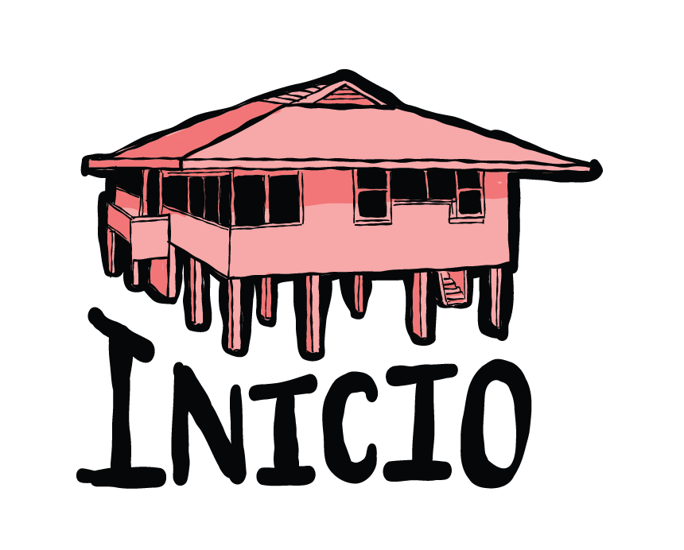
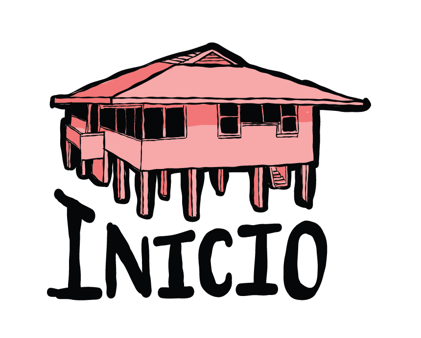

Con la implementación de los Tratados Torrijos-Carter el 1º de octubre de 1979, el territorio conocido como Zona del Canal, gobernado bajo administración estadounidense, dejó de existir y pasó a llamarse Área del Canal, en donde se reconocía la soberanía panameña.
A partir de ese momento, los diferentes bienes que se encontraban en este territorio fueron revertidos gradualmente a Panamá, culminando el proceso el 31 de diciembre de 1999 con la transferencia del Canal a manos panameñas.
Estas “áreas revertidas”, como se les conoce coloquialmente, han sido destinadas para diferentes usos, como terrenos relacionados a la operación del Canal, parques naturales, viviendas, escuelas, sedes de organizaciones no gubernamentales e instituciones gubernamentales, entre otras.